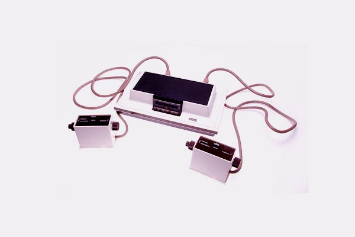
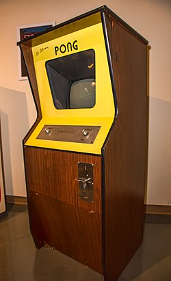
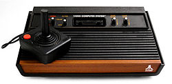
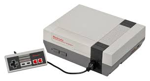
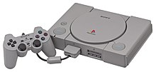
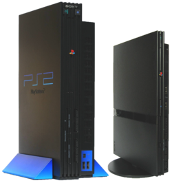
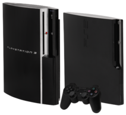

Iremos começar pelo primeiro videogame que foi inventado por Ralph Baer tambem conhecido como pai dos videogames pelo fato de ter criado o primeiro videogame,Baer já estudava a ideia de jogos interativos na televisão desde os anos 1960. Com o auxílio de uma pequena equipe, Baer desenvolveu diversos protótipos de consoles, até apresentar o Odyssey, pegando desprevenido o público americano em 1972
Pong: Foi o segundo videogame a ser lançado e foi um dos primeiros jogos de arcade, com temática de tênis de mesa seu criador é Allan Alcorn que criou o pong como um exercício de treinamento atribuído a ele pelo cofundador da atari(Nolan Bushnell) seu trabalho foi tão bom que Nolan e Ted Dabney(cofundador da atari) ficaram impressionados com a qualidade do trabalho e dicdiram fabricar o jogo. Pong foi o primeiro jogo comercialmente bem-sucedido e ajudou a estabelecer a indústria dos jogos eletrônicos junto com o odyssey,se não fossem por esses dois outras empresas não entrariam nesse ramo o tornando tão grande igual é nos dias atuais
Agora iremos entrar na segunda geração dos videogames que começa em 1976 e acaba em 1984
Atari 2600:A atari inc foi fundada pelo Nolan Bushnell e Ted Dabney em 1972.Em 1975 a atari comprou uma empresa de engenharia Cyan Engineering para desenvolver um sistema de videogame de nova geração, e trabalhou em um protótipo conhecido como stella por um tempo.Diferente de máquinas de gerações passadas que usavam lógica de programação própria e fixa para rodar um pequeno número de jogos, o núcleo do Stella era um CPU completo o famoso MOS TECHNOLOGY 6502 em uma versão reduzida, conhecida como 6507. Era combinado com chips de RAM, o MOS Technology 6532 e um chip de display e som de design próprio conhecido como TIA, de Television (Televisão) Interface (Interface) Adaptor (Adaptador). Além desses três, as duas primeiras versões da máquina continha mais um chip, uma CMOS padrão de buffer de lógica IC, fazendo um número total de quatro chips, sendo assim, com poucos chips e baratos. Algumas versões posteriores eliminaram o chip de buffer.
O design inicial não iria ser baseado em cartuchos, mas após verem um sistema de cartucho falso em outra máquina os engenheiros imaginaram que poderiam colocar os jogos em cartuchos pelo preço do conector e da embalagem.
Em agosto de 1976 Fairchild Semiconductor liberou seu próprio sistema baseado em CPU, o Channel F. O Stella ainda não estava pronto para produção, mas estava claro que deveria estar pronto antes que outros produtos similares chegassem ao mercado, que foi o que aconteceu quando a Atari lançou o Pong. A Atari simplesmente não tinha o dinheiro necessário para completar o sistema rapidamente, e, além disso, a venda de seu Pong estava diminuindo. Nolan Bushnell procurou a Warner Communications, e vendeu a companhia para eles em 1976 por 28 milhões de dólares, com a promessa de que o Stella seria produzido o mais rápido possível.
A chave para o sucesso da máquina foi a contratação de Jay Miner, um desenvolvedor de chip que concentrou vários circuitos em um chip, tornando o TIA um chip único. Uma vez completo e testado, o sistema estava pronto para a venda. Na data de lançamento 1977, o desenvolvimento tinha custado aproximadamente 100 milhões de dólares. Lançamento e sucesso
O preço inicial foi de 199 dólares e tinha 9 títulos
Agora iremos falar da terceira geração dos consoles que se iniciou em 1983 e terminou em 1990
Iremos falar sobre o NES(Nintendo Entertainment System)
O Nintendo Entertainment System (abreviado como NES; popularmente chamado de Nintendinho no Brasil) é um console de videogame de 8 bits lançado pela Nintendo na América do Norte, Europa, Ásia, Austrália e Brasil.
Originalmente lançado no Japão em 1983 com o nome de Nintendo Family Computer, Family Computer, ou apenas Famicom, o sistema foi redesenhado e recebeu o novo nome para ser lançado no mercado americano em 1985. O NES/Famicom foi o videogame de maior sucesso comercial na sua época, ajudou a indústria de videogames a se recuperar da crise de 1983 e estabeleceu novos padrões que seriam seguidos pela indústria. Também foi o primeiro console a ser produzido por terceiros, o que ajudou a divulgar o sistema em todo o mundo. O NES também foi um dos primeiros consoles a se apoiar em jogos feitos por terceiros (não só pela própria fabricante).
Em 2022, o NES encontra-se em 13º lugar na lista de consoles mais vendidos de todos os tempos, ficando atrás do Nintendo DS, PlayStation 2, Game Boy, PlayStation, Wii, Nintendo Switch e PlayStation Portable.
Iremos agora falar sobre a quarta geração dos consoles
A quarta geração não possui consoles tao inovadores pois é uma época de aprimoramento dos consoles da terceira geração
Iremos falar sobre o Super Nintendo que é o nosso querido NES mas com melhorias
O Super Nintendo Entertainment System (ou apenas Super Nintendo, abreviado SNES; no Japão Super Famicom, abreviado SFC, em japonês: スーパーファミコン, transl. Sūpā Famikon) é um console de videogame de 16-bits de quarta geração desenvolvido pela Nintendo, que foi lançado no período de 1990 à 1993 em várias parte do mundo. No Japão foi adotando o nome abreviado do seu antecessor, o Famicom (de Nintendo Family Computer) sendo chamado Super Famicom. Na Coreia do Sul, é conhecido como Super Comboy e foi distribuído pela Hyundai Electronics. Embora cada versão seja essencialmente as mesmas, várias formas de bloqueio regional impedem que as diferentes versões sejam compatíveis entre si.
O Super Nintendo Entertainment System é o segundo console doméstico da Nintendo, sucessor do Nintendo Entertainment System (NES). O console apresentou gráficos e recursos de som avançados em comparação com outros consoles na época. Além disso, o desenvolvimento de uma variedade de chips de aprimoramento (que foram integrados em placas de circuito) ajudou a mantê-lo competitivo no mercado. Enquanto brutos gráficos tridimensionais raramente tinham sido vistos antes em consoles domésticos, utilizando o chip Super FX começando com Star Fox em 1993, o SNES foi capaz de rodar jogos com gráficos tridimensionais suaves e mais detalhados do que era anteriormente possível. Isso despertou interesse mais difundido em gráficos de polígono na indústria, ajudando a inaugurar os gráficos 3D, como pode ser visto na quinta geração de consoles de videogame.
O SNES foi um sucesso mundial, tornando-se o console mais vendido da época apesar de seu início relativamente tardio e a competição feroz que enfrentou na Europa e América do Norte. O SNES permaneceu popular até a era de 32 bits e continua a ser popular entre os fãs, colecionadores, retro gamers e entusiastas de emulação, alguns dos quais ainda estão fazendo imagens ROM homebrew. O sucesso de sua venda foi superior a 50 milhões de unidades por todo o mundo. O SNES foi oficialmente descontinuado em setembro de 1999 nos Estados Unidos, e em setembro de 2003, no Japão. O último jogo oficialmente lançado para a plataforma foi Metal Slader Glory: Director's Cut tendo sido lançado exclusivamente no Japão em novembro de 2000.
Em 2017, uma versão chamada Super Nintendo Classic foi lançada na América do Norte e Europa, contendo 21 jogos do console original pré-instalados (incluindo o jogo Star Fox 2).

Agora iremos falar sobre a quinta geracao dos consoles de videogame e iremos falar sobre o PS1(Playstation1) um dos consoles mais famosos de toda a historia que tem sido atualizado em novos consoles ate hoje e tambem foi lancado nesta epoca o nintendo 64 mas nao iremos falar sobre ele
PlayStation (プレイステーション Pureisutēshon?, oficialmente abreviado PS) é uma marca internacional de consoles de videogame criada e desenvolvida pela Sony Interactive Entertainment (uma divisão da Sony), com 7 consoles (PlayStation, PlayStation 2, PSP, PlayStation 3, PlayStation Vita, PlayStation 4, PlayStation 5), abrangendo a quinta, sexta, sétima, oitava e nona gerações de videogames. A marca foi lançada pela primeira vez em 3 de dezembro de 1994 no Japão.Fora os serviços PlayStation Network, PlayStation Store e PlayStation Plus, além das empresas hoje conhecidas como PlayStation Studios.
A ideia da marca surgiu em 1988, quando a Sony tentou se unir a multinacional Nintendo para fazer uma série de discos, chamados de "Super Disc". Esses discos liam o console da quarta geração Super Famicom (conhecido como Super Nintendo Entertainment System no resto do mundo), mas foram um fracasso comercial. Até por isso, a Sony e a Nintendo criaram juntas um console, que nunca foi lançado, e um deles foi descoberto em 2015.
Foi lançado em 3 de dezembro de 1994, no Japão, e em 29 de setembro de 1995, nos Estados Unidos. Desde o seu lançamento até 2006 (quando sua produção foi extinta), a PlayStation vendeu mais de 103 milhões de unidades. Inicialmente PlayStation seria um leitor de CD-ROM para o Super Nintendo Entertainment System, o SNES-CD, a ser produzido em conjunto com a Nintendo.Durante as negociações para o lançamento, o acordo entre as empresas foi rompido. Então o engenheiro Ken Kutaragi convenceu os executivos da Sony a continuar com o projeto. Foi aí que nasceu a divisão Sony Computer Entertainment (atualmente Sony Interactive Entertainment), com o objetivo de implementar no mercado uma nova consola de videogame: a PlayStation.
Os seus principais concorrentes eram a Nintendo 64 e a Sega Saturn, dentre seus jogos de maior sucesso destacam-se os dois primeiros Gran Turismo, a série Tekken, série Tomb Raider, série Ridge Racer, a série Resident Evil, série Need For Speed, série Crash Bandicoot, Dragon Quest VII, Spyro, Silent Hill, Driver, entre outros. A produtora Squaresoft tornou se exclusiva da consola lançando jogos de sucesso como a série Final Fantasy, Parasite Eve, Chrono Cross, Vagrant Story entre outros.
Iremos falar sobre a sexta geracao agora com dois consoles principais o PS2 e o GameBoy Advance
O Game Boy Advance (popularmente abreviado como GBA) é um console portátil desenvolvido e fabricado pela Nintendo. Lançado em 2001, é o sucessor do Game Boy Color e um dos últimos produtos da linha Game Boy. Seu codinome durante o processo de desenvolvimento foi Advance Game Boy. Ele continuou recebendo jogos até 2008.
O PlayStation 2 (oficialmente abreviado como PS2) é um console de jogos eletrônicos produzido pela Sony Computer Entertainment (SCE). Foi lançado no dia 4 de março de 2000 no Japão, no dia 26 de outubro na América do Norte, e posteriormente, no dia 24 de novembro na Europa. É o sucessor do PlayStation. O PlayStation 2 é um console de sexta geração, que competiu com o Dreamcast da Sega, o GameCube da Nintendo e o Xbox da Microsoft.
Devido à imensa popularidade em todo o mundo, o console, assim como seus jogos, continuaram a ser fabricados mesmo após o lançamento do seu sucessor, o PlayStation 3. Somente depois de 13 anos do seu lançamento, perto do anúncio do lançamento do PlayStation 4, que o jornal japonês Asahi Shimbun anunciou o encerramento da fabricação do console no Japão no dia 30 de dezembro de 2012. E no dia 4 de janeiro de 2013, o jornal britânico The Guardian anunciou que a Sony encerrou a produção dos consoles PlayStation 2 no mundo inteiro.
O PS2 é o consola de videogame mais vendido de todos os tempos. De acordo com dados provenientes da Sony de 31 de março de 2012, foram vendidas mais de 155 milhões de unidades de PlayStation 2[2] e mais de 420 milhões de unidades de jogos originais do console. Foram lançados mais de 4000 jogos oficiais, licenciados para o console.O último jogo lançado para PlayStation 2 foi Pro Evolution Soccer 2014 lançado em 8 de novembro de 2013.
Iremos falar sobre a setima geracao dos consoles onde foram inventados consoles muito marcantes na historia como XBOX360 e o PS3
O Xbox 360 é um console de video games desenvolvido pela Microsoft. Como sucessor do Xbox original, é o segundo console da série Xbox. Ele competiu com o PlayStation 3 da Sony e o Wii da Nintendo como parte da sétima geração de consoles. Foi oficialmente anunciado na MTV em 12 de maio de 2005, com lançamento detalhado e informações dos jogos anunciadas mais tarde na edição de 2005 da E3.
O Xbox 360 possui um serviço online, a Xbox Live, que foi expandida a partir de sua iteração anterior no Xbox original e recebeu atualizações regulares durante a vida útil do console. Disponível em variedades gratuitas e baseadas em assinatura, a Xbox Live permite aos usuários jogar jogos online; baixar jogos (através da Xbox Live Arcade) e demos; comprar e transmitir músicas, programas de televisão e filmes através dos portais Xbox Music e Xbox Video e acessar serviços de conteúdo de terceiros através de aplicativos de transmissão de mídia. Além dos recursos multimídia on-line, ele permite aos usuários transmitir mídia de PCs locais. Vários periféricos foram lançados, incluindo controles sem fio, discos rígidos com armazenamento expandido e a câmera sensora de movimentos: o Kinect. O lançamento desses serviços adicionais e periféricos ajudou a marca Xbox a crescer a partir de jogos para englobar todos os multimídia, transformando-o em um hub para entretenimento na sala de estar.
Lançado em todo o mundo entre 2005 e 2006, o Xbox 360 foi inicialmente escasso em muitas regiões, incluindo a América do Norte e a Europa. As primeiras versões do console sofreram uma alta taxa de falha, indicada pelas chamadas "Três Luzes Vermelhas", exigindo uma extensão do período de garantia do dispositivo. A Microsoft lançou dois modelos redesenhados do console: o Xbox 360 S em 2010,e o Xbox 360 E em 2013.Em junho de 2014, 85,60 milhões de consoles Xbox 360 foram vendidos em todo o mundo, tornando-se o sexto console de videogames mais vendido da história, e o console mais vendido feito por uma empresa americana. Embora não seja o console mais vendido de sua geração, o Xbox 360 foi considerado pelo TechRadar como o mais influente através da sua ênfase na distribuição de mídia digital e jogos multiplayer na Xbox Live
O PlayStation 3 (PS3) é um console de videogames desenvolvido pela Sony Computer Entertainment. É o sucessor do PlayStation 2 e faz parte da marca PlayStation de consoles. Foi lançado em 11 de novembro de 2006, no Japão,17 de novembro de 2006 na América do Norte e em 23 de março de 2007 na Europa e Oceania. O PlayStation 3 competiu com o console Xbox 360 da Microsoft e o Wii da Nintendo como parte da sétima geração de consoles de videogames.
O console foi anunciado oficialmente pela primeira vez na edição de 2005 da E3 e foi lançado no final de 2006. Foi o primeiro console a usar o disco Blu-ray como formato de mídia para gravação de jogos, seu meio de armazenamento primário.Foi o primeiro console da Sony a ter um Sistema On-line a PSN, a PlayStation Network,e a sua conectividade remota com o PlayStation Portable e PlayStation Vita,sendo capaz de controlar remotamente os dispositivos. Em setembro de 2009, o modelo Slim do PlayStation 3 foi lançado. Foi removida a capacidade de hardware para executar os jogos do PlayStation 2. Era mais leve e mais fino do que a versão original, e apresentava um logotipo redesenhado e design de marketing, bem como uma pequena mudança de start-up no software. Um novo modelo denominado Super Slim foi lançado no final de 2012, refinando e redesenhando o console.
O sistema teve um início com vendas ruins no mercado,porém conseguiu se recuperar, especialmente após a introdução do modelo Slim. O seu sucessor, o PlayStation 4, foi lançado em 15 de novembro de 2013. Em 29 de setembro de 2015, a Sony confirmou que a produção de novos consoles iriam ser descontinuadas na Nova Zelândia, porém o sistema permaneceu em produção em outros mercados.A fabricação de novas unidades nos Estados Unidos terminaram em outubro de 2016.Em 2017, o Japão foi o último território em que novas unidades ainda estavam sendo produzidas até 29 de maio de 2017, quando a Sony confirmou que o PlayStation 3 era descontinuado no Japão.
A PlayStation 4 (プレイステーション4 Pureisutēshon Fō?, oficialmente abreviada como PS4) é uma consola de videojogos, da oitava geração com arquitetura x86, produzida pela empresa Sony Interactive Entertainment e lançada em novembro de 2013, como a quarta edição da série PlayStation, sucessora da PlayStation 3, competindo directamente com a Wii U da Nintendo e, com a Xbox One da Microsoft.
Foi anunciada em fevereiro de 2013 durante uma conferência de imprensa da Sony em Nova Iorque, no evento "PlayStation Meeting 2013" cujo tema foi "O Futuro da PlayStation". Foi lançada na América do Norte a 15 de novembro de 2013, na Europa e América do Sul a 29 de novembro de 2013 e no Japão a 22 de fevereiro de 2014. A PlayStation 4 é a primeira consola da Sony a ser oficialmente e legalmente editada na China desde a PlayStation 2, depois do levantamento da proibição que durou 14 anos.
Afastando-se da arquitectura Cell da sua antecessora, a PlayStation 4 é a primeira da série da Sony que apresenta arquitectura x86, mais especificamente com a Unidade de Processamento Acelerado (UPA) AMD x86-64, uma plataforma amplamente usada e comum em muitos dos microcomputadores modernos. A ideia é fazer com que o desenvolvimento de jogos eletrónicos seja mais fácil para a consola, atraindo uma ampla gama de grandes e pequenos produtores. Estas mudanças destacam o esforço da Sony para melhorar as lições aprendidas durante o desenvolvimento, produção e lançamento da PlayStation 3. Outros recursos de hardware notáveis da PlayStation 4 incluem 8GB GDDR5 de memória, um leitor Blu-ray mais rápido e um GPU que consegue um desempenho de 1.843 TFLOPS/s. Em conversa para a revista Edge, vários produtores de videojogos descrevem a diferença de desempenho entre a PlayStation 4 e a Xbox One como "'significativa' e 'óbvia'".
A consola permite vários métodos de interactividade com outros serviços e aparelhos incluindo; a PlayStation App, uma aplicação que melhora e expande a interactividade com a consola usando aparelhos iOS e Android; o Remote Play, que permite activar a PlayStation 4 à distância para continuar a jogar num segundo ecrã via PlayStation Vita ou dispositivos Xperia; o PlayStation Now, um serviço de computação em nuvem baseado em Gaikai, que oferece videojogos e outros conteúdos em stream. Pela incorporação de um botão de partilha (SHARE) no novo comando, o DualShock 4, faz com que seja possível exibir conteúdo que está a ser jogado e transmitido ao vivo aos amigos, ou mesmo partilhar jogos através da característica ‘Share Play’, desta maneira a Sony planeia colocar assim mais foco nos aspectos sociais da consola.
Foi muito bem recebida pelos críticos e pelos consumidores com as análises a destacarem o design, o novo DualShock 4 e o hardware. Um sucesso comercial, a PlayStation 4 vendeu mais de um milhão de unidades nas primeiras 24 horas e, até março de 2020, já tinham sido vendidas mundialmente mais de 110,4 milhões de unidades, estando entre as consolas mais vendidas de sempre.
Em setembro de 2016, a Sony revelou dois novos sistemas, revisões do hardware da PlayStation 4: a versão “slim”, que corresponde a um design menor do sistema original; e a versão "Pro", com uma GPU melhorada e a CPU com frequência de relógio aumentada para suportar jogos na resolução 4K e com mais capacidade de armazenamento.

Iremos falar sobre os consoles atuais
Iremos falar sobre o inovacao dos consoles a realidade virtual que foi niniciada com o oculus quest
O Oculus Quest é um dispositivo independente com uma plataforma de realidade virtual (tudo-em-um) no formato de um óculos tecnológico de cabeça para jogos eletrônicos (dispositivo tecnológico de imersão em ambiente virtual 3D e em 360°)desenvolvida pela Oculus (divisão da Facebook Inc), no formato de um óculos tecnológico de cabeça que opera com o sistema operacional baseado no Android, lançado em 21 de maio de 2019.
Semelhante ao seu antecessor, Oculus Go, o Oculus Quest é um dispositivo autônomo sem fio quesuporta rastreamento posicional com seis graus de liberdade, usando sensores internos e uma série de câmeras na frente do headset em vez de sensores externos. As câmeras também são usadas como parte do recurso de segurança "Passthrough", que mostra uma visão das câmeras quando o usuário sai de sua área de limite designada. Uma atualização de software posterior adicionou o "Oculus Link", um recurso que permite que o Quest seja conectado a um computador via USB, permitindo o uso com softwares e jogos compatíveis com o Oculus Rift.
O Oculus Quest recebeu elogios por seu preço e conveniência, e por ter melhorado a fidelidade gráfica e rastreamento em relação ao Oculus Go, mas foi criticado por ser pesado e por possuir baixa qualidade gráfica em jogos de VR de PC. No lançamento, também enfrentou críticas por estar limitado aos softwares disponíveis na Oculus Store e não ter compatibilidade com versões anteriores dos softwares do Oculus Go. A introdução posterior do Oculus Link levou a reavaliações do Quest, com os revisores elogiando a maior flexibilidade do dispositivo.